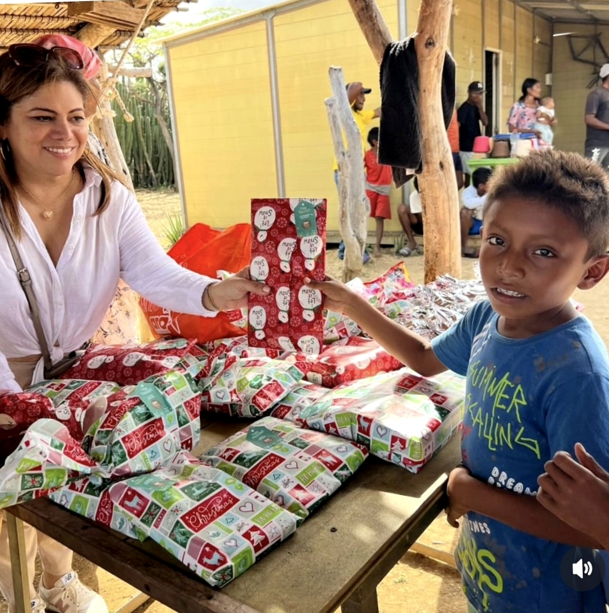
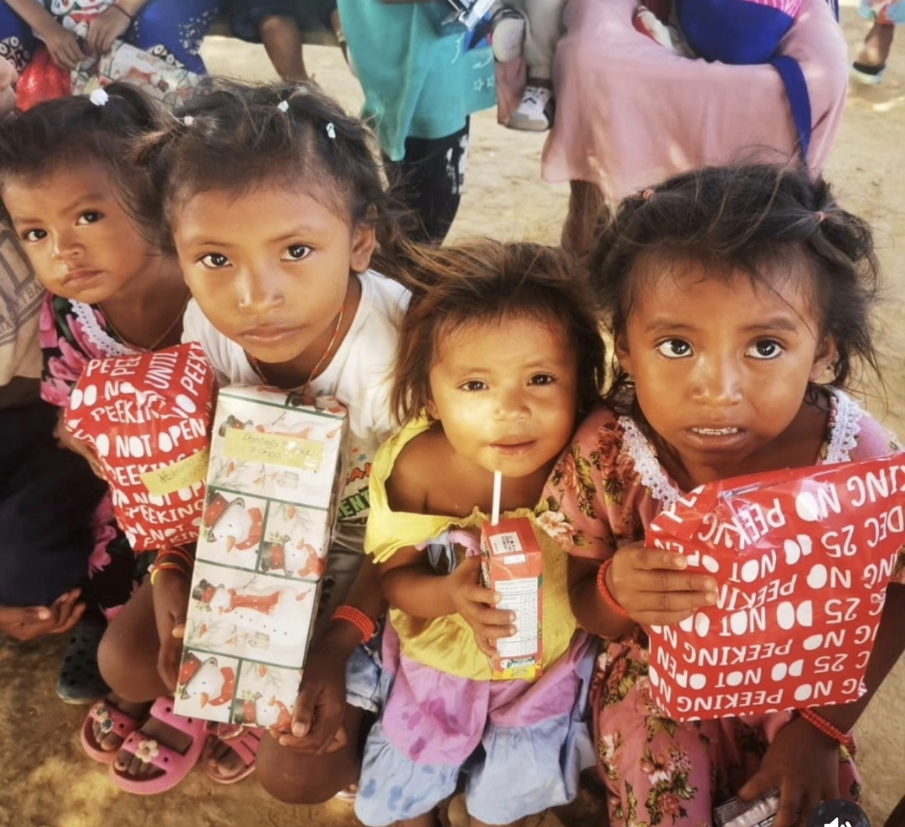
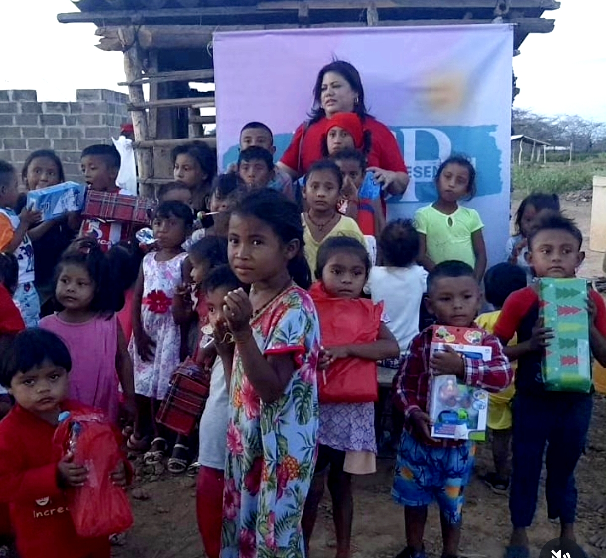
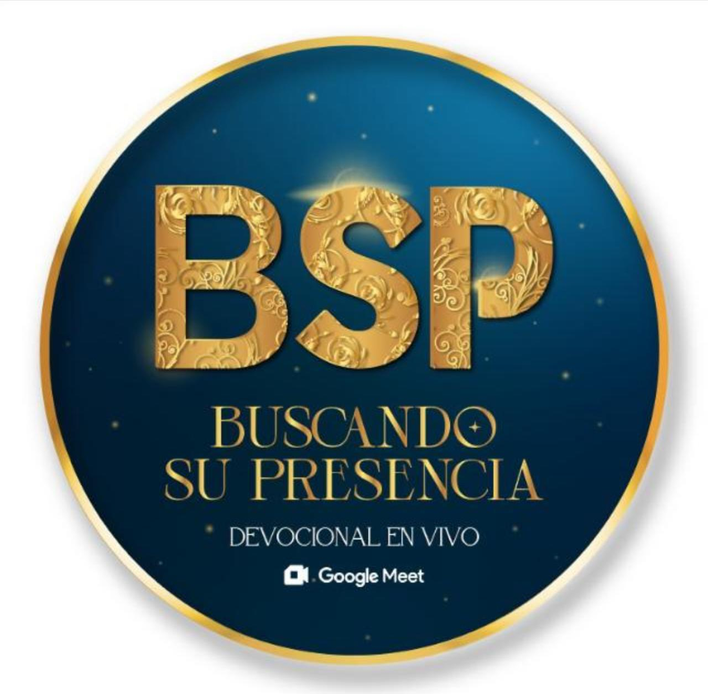

Buscando Su Presencia para servir al prójimo, transformar comunidades y generar esperanza.
Llegamos a niños, familias y comunidades indígenas con proyectos sociales, educativos, culturales, espirituales y ambientales.
Una fundación comprometida con la transformación integral
Somos una fundación sin ánimo de lucro comprometida con la transformación integral de comunidades y personas en situación de vulnerabilidad. Diseñamos y desarrollamos proyectos sociales, culturales, educativos, espirituales y ambientales, promoviendo oportunidades, fortaleciendo capacidades y contribuyendo a la construcción de comunidades más dignas, solidarias, sostenibles y resilientes.
Trabajamos especialmente con niños, adolescentes, jóvenes, familias, comunidades indígenas, población rural y otros grupos en condición de vulnerabilidad, procurando que cada iniciativa genere un impacto positivo y sostenible.


Misión y Visión
Contribuir a la transformación integral de personas y comunidades en situación de vulnerabilidad mediante el diseño y desarrollo de proyectos sociales, culturales, educativos, espirituales y ambientales que generen oportunidades, fortalezcan capacidades y promuevan valores, buscando Su Presencia para servir al prójimo y generar esperanza.
Consolidarnos como una fundación referente en el acompañamiento cercano y sostenible de comunidades vulnerables, impulsando el desarrollo humano, la solidaridad y el amor al prójimo para construir una sociedad más justa, solidaria, inclusiva y sostenible.
Acompañamiento integral a poblaciones vulnerables.
Cultura, arte, recreación y deporte.
Educación y formación como herramientas de cambio.
Valores y principios, respetando la libertad de cada persona.
Cuidado del medio ambiente y prácticas responsables.
Llegamos donde otras no llegan
Más que crecer solamente como organización, queremos convertirnos en una plataforma de transformación: identificar necesidades, generar oportunidades, formar personas, fortalecer comunidades y transformar vidas.
Fortalecer el tejido social y promover la solidaridad y la inclusión.
Impulsar la educación y la formación como herramientas de transformación.
Promover la cultura, el arte, la recreación y el deporte como medios para desarrollar talentos y generar bienestar.
Acompañar integralmente a poblaciones vulnerables, generando espacios de apoyo, participación y oportunidades.
Promover el cuidado del medio ambiente y prácticas responsables con nuestro entorno.
Fomentar valores y principios espirituales, respetando la dignidad y libertad de cada persona.
Crear iniciativas sostenibles que contribuyan al desarrollo de las comunidades.
Galería y Brochure
Fotografías de nuestras jornadas comunitarias y las láminas del brochure institucional. Toca cualquier imagen para verla completa.
Espacio Devocional
Nuestro nombre nace de buscar Su Presencia. Cada día nos encontramos en un devocional en vivo, y aquí compartimos palabras de ánimo, siempre respetando la dignidad y la libertad de cada persona.
Elige un tema para tu reflexión:
Esperanza
Cada día es una nueva oportunidad para sembrar algo bueno. Aun en medio de la dificultad, la esperanza se hace real cuando alguien decide acompañar a otro.

Devocional en vivo · todos los días · 5:30 a. m.
La tecnología nos acerca
La virtualidad nos ha permitido conocer y compartir con personas de todo el mundo, derribando muchas barreras. Cada día, a partir de las 5:30 a. m., hacemos un devocional en vivo en una plataforma digital donde se conectan personas de diferentes lugares.
Nos conectamos con quienes están cerca y con quienes están a miles de kilómetros.
La distancia deja de ser un límite para orar, compartir y encontrarnos.
Empezamos la mañana juntos, en vivo, con una palabra que da ánimo.
Desde un celular, una tableta o un computador puedes unirte.
Compartimos, nos escuchamos y nos acompañamos sin importar dónde estemos.
La tecnología también nos ayuda a llegar a más personas y a tender la mano.
Donaciones: paso a paso
Tu aporte llega a niños, familias y comunidades en La Guajira y en toda Colombia. Para dudas, contacto o donaciones escríbenos por WhatsApp o al correo.
Elige cómo aportar
Hay varias formas de ser parte:
- Aporte económico
- Alimentos o regalos
- Voluntariado
Escríbenos
Contáctanos al WhatsApp 323 808 5179 para recibir los datos oficiales vigentes y coordinar tu aporte.
Confirma tu aporte
Confirma con nosotros y haz parte de la transformación de vidas y comunidades.